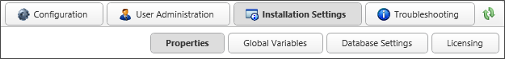
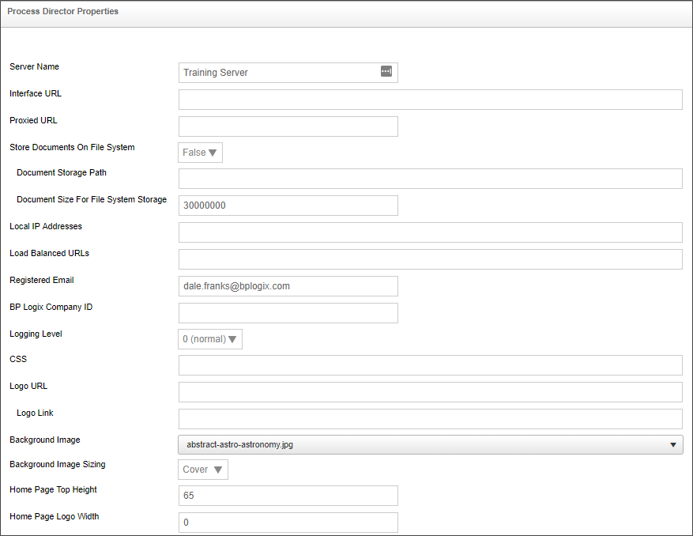
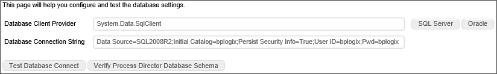
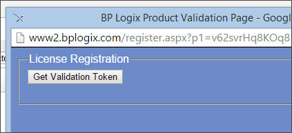
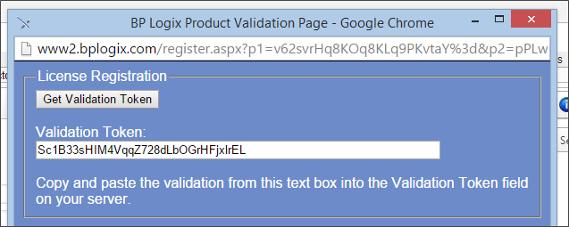
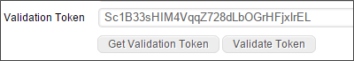
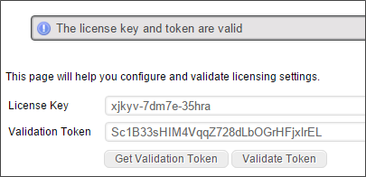

NOTE: For Cloud customers, some settings may be hidden from user accounts that are not specified as Managed Users.
NOTE: For Cloud customers, some settings may be hidden from user accounts that are not specified as Managed Users.This section of the IT Administration area enables you to set and change specific options of Process Director.

NOTE: For Cloud customers, some settings may be hidden from user accounts that are not specified as Managed Users.

The Properties page lists the basic options to configure the Process Director Server, which helps maximize the flexibility of Process Director. Below is the list of options available on the Properties page.
The name for the Process Director installation.
Specifies the actual host name that can be used to connect to Process Director.
Specifies the URL of your proxy server, if you have one in use.
Enables you to store documents on the server file system. Setting this option will require you to set the Document Storage Path and Document Size for File System Storage properties. For more information about storing documents in the Process Director database as opposed to the file system, see the Storing Attachments topic.
There are times when you may want to store the binary data on a file system, instead of in the database. For example, if you are dealing with very large digital assets/documents, or a large number of them, storing them on the file system may be better. If your database gets too large with document data, it can slow functions like your database backups. When binaries are stored on the file system, you still will have entries in the internal document tables, but the BLOB column will be empty. It is transparent to the implementers and end-users where the document binaries are stored.
Actual file path to store files.
Enables you to set the minimum size requirement of the file to be stored on the file system. If you want to store ALL files in the file system, set the value of this property to 0.
Enables you to add a comma separated list of IP addresses that have permission to the IT Administrative section of Process Director.
Process Director incorporates load balancing to share the processing load between multiple Process Director installations. This property takes a comma-separated list of URLs that are part of the load balancing scheme.
This is an email address to use as a fallback "From" address for process notifications if one of the primary email addresses is not available. The "From" address for a process notification is set by the first value that is not empty from the following list:
For users of Process Director v5.27 and higher, Process Director enables the use of address strings with a Display Name component (e.g. "Test User <test@example.com>").
Enables you to set a specific logging level that may provide more information in the logs.
Enables you to specify a custom CSS file. It is recommended to place the CSS file in the custom directory of the Process Director install.
Enables you to specify an image to replace the logo throughout the system. Additionally you can specify a hotlink for the logo.
Enables you to specify a URL to which users will be sent if they click the logo image.
Enables you to specify a pre-defined background image to display in the background of the Login page. A number of stock images are displayed in the dropdown control enabling you to select the desired background image.

Enables you to specify how the background image will appear on the login page. The following options are available:
Enables you to adjust the height of the top navigation bar.
Enables you to specify the width of the logo displayed at the top right of the page.
Enables you to set a host name or IP address for the SMTP Host. By default it will use the local SMTP server. Setting this property also allows you to set the SMTP Port, SMTP UserID, and SMTP Password, and SSL Required properties.
You do have some different options for sending mail from the system.
BP Logix recommends that you enable your mail server to accept mail relay from the IP Address of the process Director server, and set the SMTP host to the mail server name, e.g., relay.domain_name.com. This will provide the most direct connection to your mail server, and enable your mail server to impose organizational policies, and return error messages to Process Director.
The SMTP port used to send email. The default SMTP port is 25 for unencrypted connections and 465 for SSL connections.
The User Name for the email account that will be used to send email.
The Password for the email account that will be used to send email.
Determines whether the connection to the SMTP server will require SSL to encrypt the UserID and password when sent to the SMTP server.
Enables you to enable or disable Web Services for the system. Additionally you can add restrictions. Setting this property allows you to set the Require Web Service Authentication and Web Service Restrictions properties.
Determines whether authentication is required to use a web service.
A comma-separated list of IP Addresses that you enter into this field, which will restrict access to web services to only requests from the IP Addresses entered. Leaving this field blank will allow universal access to web services.
In addition to a comma-separated list of IP Addresses, this field also supports CIDR notation for an IP Address range, e.g., "10.1.1.0/24" will use all IP Addresses between 10.1.1.0 and 10.1.1.24.
Enables you to set the number of custom icons that you can use in the Process Director interface. The default setting is 0. If you create any custom icons, you must set this value to the exact number of custom icons that you have created. For information on creating custom icons, please see the Creating Custom Icons topic.

The Global Variables page enables specific options to be enabled or disabled throughout the system.
Setting this value to "True" will set the landscape aspect ratio as the default for all PDF conversions.
Setting this value to "True" will allow the Process Director installation to use client-side validation. The data that the user enters is validated in the user's browser before being sent to the server. If the validation fails, the user can correct the data immediately. Only data that passes client-side validation is sent to the server, which helps reduce server load. Without client validation, all data must be sent to the server for validation, which may require multiple round trips to the server before the data passes validation. Client-side validation removes the need for these round trips to the server for invalid data.
Enables you to specify the type of mobile devices supported by Process Director by entering a comma-separated list of HTTP types. The default is "blackberry". Available HTTP types include: Android, iPad, iPhone, etc.
Enables you to specify the default “from” email address for the workflow. If this value is set, ALL emails sent from a Workflow or Process Timeline will be sent from this email address. This field will accept a display-formatted email address, using the format:
Display Name <username@domain.com>
Enables or disables the client plug-in for Process Director.
Enables you to enable or disable the partition Meta Data administration for Process Director.
Enables you to enable or disable email notifications in the workflow for Process Director. If this property is disabled, Process Director will not send any emails.
If this property is set to "True", permissions can be set to deny users access to Process Director objects.
Enables you to allow users to complete tasks via email. This option can be enabled in two ways. Setting this value to "Yes" will enable all tasks to be completed via email. Setting this value to "Configured in each process" will enable process designers to determine whether completion by email should be allowed on a given process.
Setting this value to "True" will ensure that Process Director will only accept task responses sent from the email address specified in the user's profile. Responses from any other email address will be ignored. If users will respond from alternate email addresses, then this value must be set to "False".
If set to "True", any validation error that arises when a task response is submitted will send an email notification to the sender of the original error.
Setting this value to "True" will enables the "Remember Me" option on the login page. When the user checks the "Remember Me" check box on the login page, the user will not need to type in a password on subsequent logins.
Setting this value to "True" ensures that only Partition Admins will be allowed to configure a Datasource to use the Internal database.
Setting this value to "True" ensures that only Partition Admins will be allowed to configure a Datasource to use the Internal User database.
Setting this value to "True" ensures that only Partition Admins will be allowed to configure a View within a Report Definition.
Setting this value to "True" ensures that only Partition Admins will be allowed to configure scripts for Forms, Workflows, and Knowledge Views.
The Database Settings page allows you to set the database connection string and database client provider. Once you have entered your connection strings ensure that you saved your settings. You may also test the connection by clicking the “Test Database Connect” button. This will return a valid statement or return an error.

You must add a license key after installation to activate Process Director.
 Reregistering your License
Reregistering your LicenseSome Process Director licenses have an expiration date, and this requires that the license be reregistered to keep using the software after the registration expires. To reregister your license, go to the Licensing page of the Installation Settings section, and perform the following procedure:




Your Process Director license has now been properly re-registered.